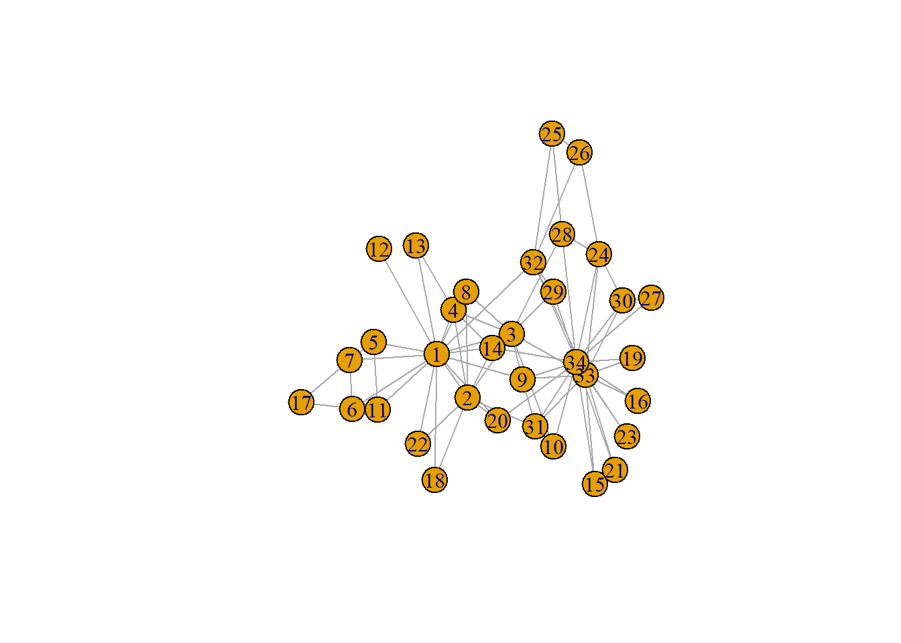
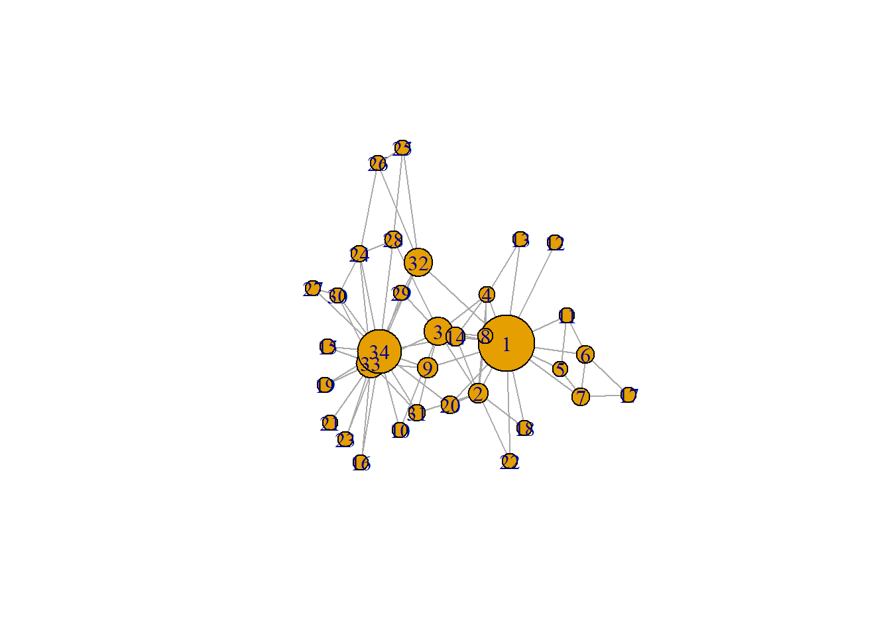
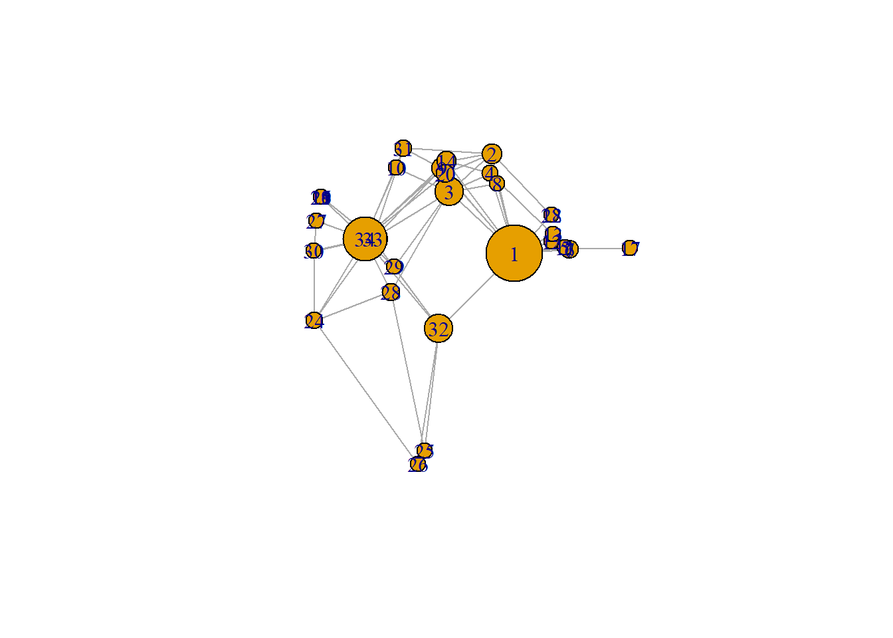
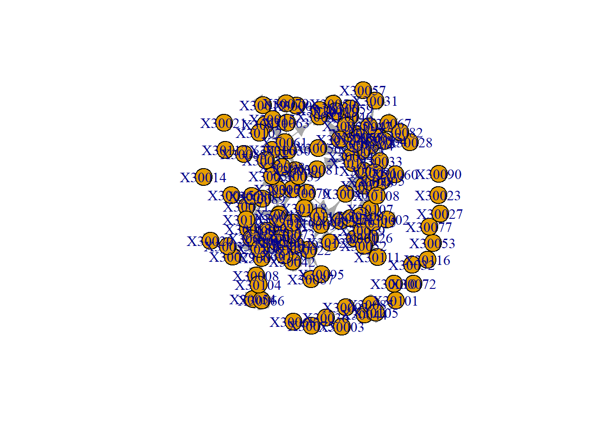
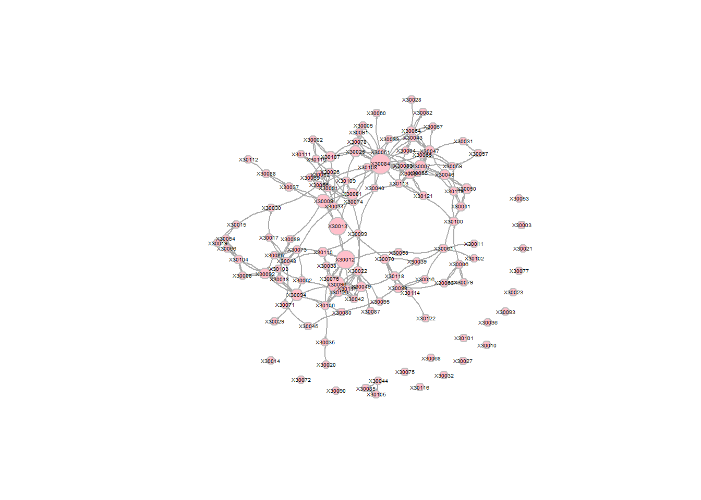

Week 4
Lauren Dirix
1 Preparation before class
1.1 Adjusting my research questions
Based on the discussions last week, I think I will keep my research questions the same. Thus my research questions are: 1. Are students who are connected to each other more similar with regards to civic engagement, than students who are not connected to each other? 2. Do students become more similar to each other with regards to civic engagement, when they are connected in a network?
1.2 What data do I need?
Here I will further describe the data that I need to answer my research questions. The items I chose last week, still seem like the best choice to me for measuring the concepts, I will just go into them a bit more deeply this week, answering what level data the items measure.
Civic engagement
For civic engagement, the questionnaire measures both beliefs and behaviour. I am most interested in behaviour, so I will be using that scale from now on. This scale consists of six items, each measuring a different civic behaviour. This is a measure on an individual, actor level. This is a dynamic measure, it can change over time, which is why it is interesting whether it changes because of the ties people have.
Strong/ weak ties
The measure for both strong and weak ties, are inherently dyadic data, as you cannot have a tie on your own. The questions asked in the MRCS dataset ask for directed ties, as the question is about whether actor A friends (or study partners) with actor B, however, it is possible that actor B does not nominate actor A, leading to a directed tie.
Covariates
Last week I did not look into covariates that should be considered, but the dataset contains all the ‘standard’ covariates, that would be important to control for: - Gender (RXge) - Ethnicity (RXreth) - What year of college (Rfrstyr) These are all variables measured at the individual level, with the first two being stable characteristics, and the last one being dynamic.
2 In class
2.1 SNASS tutorial
require("igraph")
g <- make_graph("Zachary")
plot(g)
Visually, this isn’t the same graph as in the tutorial, but the ties are the same, and the centre is relatively the same. Apparently, the figure is made to put the ‘popular’ people in the centre. Based on this, we can say something about network size, the fact that the ties are undirected (but is that igraph, or the data that is undirected –> check matrix).
gmat <- as_adjacency_matrix(g, type = "both", sparse = FALSE)
# gmat
isSymmetric(gmat)## [1] TRUEBased on the matrix, there are undirected ties, because it is symmetric. You can also check this with isSymemetric, if that is true, there is an undirected network.
2.1.1 Descriptive statistics
Transitivity
# be aware that directed graphs are considered as undirected. but g is undirected.
igraph::transitivity(g, type = c("localundirected"), isolates = c("NaN", "zero"))## [1] 0.1500000 0.3333333 0.2444444 0.6666667 0.6666667 0.5000000 0.5000000 1.0000000 0.5000000
## [10] 0.0000000 0.6666667 NaN 1.0000000 0.6000000 1.0000000 1.0000000 1.0000000 1.0000000
## [19] 1.0000000 0.3333333 1.0000000 1.0000000 1.0000000 0.4000000 0.3333333 0.3333333 1.0000000
## [28] 0.1666667 0.3333333 0.6666667 0.5000000 0.2000000 0.1969697 0.1102941There is not one actor who is specifically very unique in their amount of transitive ties, thus doesnt seem to be that interesting of a statistic
Betweenness
igraph::betweenness(g, directed = FALSE)## [1] 231.0714286 28.4785714 75.8507937 6.2880952 0.3333333 15.8333333 15.8333333 0.0000000
## [9] 29.5293651 0.4476190 0.3333333 0.0000000 0.0000000 24.2158730 0.0000000 0.0000000
## [17] 0.0000000 0.0000000 0.0000000 17.1468254 0.0000000 0.0000000 0.0000000 9.3000000
## [25] 1.1666667 2.0277778 0.0000000 11.7920635 0.9476190 1.5428571 7.6095238 73.0095238
## [33] 76.6904762 160.5515873This shows that number 1 and number 34 have very high number, in the plot you do not see that (big) difference between 33 and 34, thus we need to recreate the plot. It seems like 1, 3, 32, 33, and 34 are interesting, as they have large numbers.
How can we plot that?
Colour code –> upalate to show the brighter the colour the more betweenness
Size increase –> Size nodes dependent on betweenness
Layout broader –> No overlapping nodes
2.1.2 Dyad census
igraph::dyad_census(g)## Warning: `dyad_census()` requires a directed graph.## $mut
## [1] 78
##
## $asym
## [1] 0
##
## $null
## [1] 483Because it is an undirected graph, the asymmetry is always 0
2.1.3 Triad census
igraph::triad_census(g)## Warning in triad_census_impl(graph = graph): Triad census called on an undirected graph. All connections will be treated as mutual.
## Source: misc/motifs.c:1157## [1] 3971 0 1575 0 0 0 0 0 0 0 393 0 0 0 0 45# I will use sna because it shows the names of the triads as well.
sna::triad.census(gmat)## 003 012 102 021D 021U 021C 111D 111U 030T 030C 201 120D 120U 120C 210 300
## [1,] 3971 0 1575 0 0 0 0 0 0 0 393 0 0 0 0 45unloadNamespace("sna") #I will detach this package again, otherwise it will interfere with all kind of functions from igraph, and my students will hate me for that.This shows per sort of triad, how many times it is existent in the network
How many ways there are to close a triad, is calculated through an actor perspective –> If there is a triad, there are three ways to be a triad, from each actor one
Transitivity: How many triads are closed divided by the amount of triads that are closed or can be closed OR how many 300 networks are there, divided by 300 + 201 networks (because only 201 can be closed) This same goes for reciprocity (on dyad level), which cannot be done on this network, because it has undirected ties
Local transitivity: The transitivity of one ego –> shows you how many transitive ties one ego has Can tell you something about how two people with the same amount of ties, differ in their network structure
# Caluclating transitivity in an r-function
igraph::transitivity(g, type = "global")## [1] 0.2556818# Or
sna::gtrans(gmat)## [1] 0.2556818# Calculating transitivity manually
triad_g <- data.frame(sna::triad.census(gmat))
transitivity_g <- (3 * triad_g$X300)/(triad_g$X201 + 3 * triad_g$X300)
transitivity_g## [1] 0.25568182.1.4 Network visualisation
# changing V
V(g)$size = betweenness(g, normalized = T, directed = FALSE) * 60 + 10 #after some trial and error
plot(g, mode = "undirected")
Meaning of the different parts of the codes:
V = virtuses (the nodes)
E = edges
*60 = betweenness score is between 0 and 1, needs to be more heavily taken into account
+10 = if you don’t do that, nodes with a betweenness of 0 will also be visualised with 0, which would be undesirable
set.seed(2345)
l <- layout_with_mds(g) #https://igraph.org/r/doc/layout_with_mds.html
plot(g, layout = l)
l #let us take a look at the coordinates## [,1] [,2]
## [1,] 1.070931935 -0.172458113
## [2,] 0.732844464 0.754023309
## [3,] 0.100582299 0.397693607
## [4,] 0.708246655 0.570205545
## [5,] 1.816293170 -0.120778206
## [6,] 1.881329566 -0.135518854
## [7,] 1.881329566 -0.135518854
## [8,] 0.812606714 0.472619437
## [9,] -0.003769996 0.615513628
## [10,] -0.685680315 0.621065149
## [11,] 1.816293170 -0.120778206
## [12,] 1.621247830 -0.065820692
## [13,] 1.637845123 0.001789972
## [14,] 0.067317230 0.681421148
## [15,] -1.796316404 0.351417630
## [16,] -1.796316404 0.351417630
## [17,] 2.775260452 -0.124317652
## [18,] 1.616210024 0.182510197
## [19,] -1.796316404 0.351417630
## [20,] 0.048362858 0.566654982
## [21,] -1.796316404 0.351417630
## [22,] 1.616210024 0.182510197
## [23,] -1.796316404 0.351417630
## [24,] -1.891240567 -0.799574907
## [25,] -0.258345165 -2.006346563
## [26,] -0.360530857 -2.131642875
## [27,] -1.865177401 0.128596564
## [28,] -0.760226022 -0.529392331
## [29,] -0.710979936 -0.299960128
## [30,] -1.898426916 -0.149398746
## [31,] -0.568691923 0.804189411
## [32,] -0.048136037 -0.870967614
## [33,] -1.023681000 -0.035802363
## [34,] -1.146442924 -0.037605192l[1, 1] <- 4
l[34, 1] <- -3.5
plot(g, layout = l) This is the same network, but the second one looks/ feels a lot
different (seems to suggest way more polarisation, where 1 and 34 are
polar opposites) For the second one, we manipulated the graph manually,
if you do this, be honest about it!!! BUT this is the same as the
algorithm does, which is something that is generally accepted, which is
kind of odd. Solution: Maybe mention what algorithm you used (and why?)
–> graphs aren’t neutral
This is the same network, but the second one looks/ feels a lot
different (seems to suggest way more polarisation, where 1 and 34 are
polar opposites) For the second one, we manipulated the graph manually,
if you do this, be honest about it!!! BUT this is the same as the
algorithm does, which is something that is generally accepted, which is
kind of odd. Solution: Maybe mention what algorithm you used (and why?)
–> graphs aren’t neutral
3 Trying on my own
Load in data
packages = c("stringdist", "stringi", "tidyverse")
fpackage.check(packages)## [[1]]
## NULL
##
## [[2]]
## NULL
##
## [[3]]
## NULLload("./data/IndividualCharacteristics.RData")
load("./data/NetworkCharacteristics.RData")3.1 Variables of interest
3.1.1 Network matrix (weak ties)
Create a matrix, that can be used within RSiena. I set all values 9 to NA, as these respondents have not filled out the survey
# view(studying[[1]])
studying_df_t1 <- as.data.frame(studying[[1]][1])
class(studying_df_t1)## [1] "data.frame"# view(studying_df_t1)
weak_netw_t1 <- data.matrix(studying_df_t1)
weak_netw_t1[weak_netw_t1==9]<-NA
class(weak_netw_t1)## [1] "matrix" "array"# view(weak_netw_t1)
studying_df_t2 <- as.data.frame(studying[[1]][2])
class(studying_df_t2)## [1] "data.frame"# view(studying_df_t2)
weak_netw_t2 <- data.matrix(studying_df_t2)
weak_netw_t2[weak_netw_t2==9]<-NA
class(weak_netw_t2)## [1] "matrix" "array"# view(weak_netw_t2)3.1.2 Network matrix (strong ties)
# view(hanging[[1]])
hanging_df_t1 <- as.data.frame(hanging[[1]][1])
class(hanging_df_t1)## [1] "data.frame"# view(hanging_df_t1)
strong_netw_t1 <- data.matrix(hanging_df_t1)
strong_netw_t1[strong_netw_t1==9]<-NA
class(strong_netw_t1)## [1] "matrix" "array"# view(strong_netw_t1)
hanging_df_t2 <- as.data.frame(hanging[[1]][2])
class(hanging_df_t2)## [1] "data.frame"# view(hanging_df_t2)
strong_netw_t2 <- data.matrix(hanging_df_t2)
strong_netw_t2[strong_netw_t2==9]<-NA
class(strong_netw_t2)## [1] "matrix" "array"# view(strong_netw_t2)3.1.3 Covariates (gender, ethnicity)
gender_df <- as.data.frame(gender)
ethnicity_df <- as.data.frame(ethnic)
ind_mat <- data.matrix(cbind(gender_df, ethnicity_df))
class(ind_mat)## [1] "matrix" "array"# view(ind_mat)As both gender and ethnicity are stable characteristics, we only need one variable for each (not both T1 and T2).
copy_ind_mat <- ind_mat
for(i in 1:nrow(copy_ind_mat)){
if (is.na(copy_ind_mat[i])) {
copy_ind_mat[i] <- copy_ind_mat[i, 2]
}
}
print(ind_mat)## T1GENDER T2GENDER T1ETHNICITY T2ETHNICITY
## 30001 2 2 1 1
## 30002 2 2 3 3
## 30003 1 NA 4 NA
## 30004 2 2 2 2
## 30005 1 1 1 1
## 30006 2 2 4 4
## 30007 NA 1 NA 1
## 30008 2 2 4 4
## 30009 2 2 1 1
## 30010 1 NA 1 NA
## 30011 2 2 1 1
## 30012 1 1 1 1
## 30013 2 2 1 1
## 30014 2 2 1 1
## 30015 2 2 5 5
## 30016 2 2 5 5
## 30017 2 2 4 4
## 30018 2 2 1 1
## 30019 2 2 4 4
## 30020 2 2 2 2
## 30021 2 2 2 2
## 30022 1 1 3 3
## 30023 2 2 3 3
## 30025 1 1 4 4
## 30026 1 1 1 1
## 30027 1 1 5 5
## 30028 2 2 2 2
## 30029 1 1 4 4
## 30030 2 2 4 4
## 30031 2 2 4 4
## 30032 2 NA 1 NA
## 30033 2 2 4 4
## 30034 2 2 4 4
## 30035 2 2 4 4
## 30036 2 2 4 4
## 30037 2 2 1 1
## 30038 1 1 1 1
## 30039 NA 2 NA 1
## 30040 NA 1 NA 1
## 30041 2 2 2 2
## 30042 NA 2 NA 2
## 30043 2 2 1 1
## 30044 2 2 1 1
## 30045 2 2 1 1
## 30046 1 1 4 4
## 30047 2 2 1 1
## 30048 1 1 4 4
## 30049 2 2 1 1
## 30050 2 2 1 1
## 30051 1 1 1 1
## 30052 NA 1 NA 4
## 30053 1 1 4 4
## 30054 2 2 4 4
## 30055 2 2 1 1
## 30056 NA 2 NA 3
## 30057 2 2 5 5
## 30058 2 2 1 1
## 30059 1 1 1 1
## 30060 NA 1 NA 1
## 30061 2 2 1 1
## 30062 2 2 4 4
## 30063 2 2 4 4
## 30064 2 2 1 1
## 30065 1 1 4 4
## 30066 1 1 4 4
## 30067 2 2 1 1
## 30068 1 NA 1 NA
## 30069 1 1 4 4
## 30070 2 2 2 2
## 30071 2 2 3 3
## 30072 1 1 1 1
## 30073 1 1 3 3
## 30074 1 1 3 3
## 30075 1 1 2 2
## 30076 1 1 1 1
## 30077 1 NA 2 NA
## 30078 1 1 3 3
## 30079 2 2 4 4
## 30080 2 2 4 4
## 30081 2 2 1 1
## 30082 2 2 1 1
## 30083 1 1 1 1
## 30084 1 1 1 1
## 30085 2 2 1 1
## 30086 1 1 4 4
## 30087 2 2 4 4
## 30088 2 2 2 2
## 30089 2 2 1 1
## 30090 2 NA 3 NA
## 30091 1 1 2 2
## 30092 2 2 3 3
## 30093 1 NA 4 NA
## 30094 2 2 4 4
## 30095 NA 1 NA 3
## 30096 2 2 1 1
## 30097 2 2 1 1
## 30098 2 2 5 5
## 30099 1 1 1 1
## 30100 2 2 4 4
## 30101 2 2 2 2
## 30102 2 2 1 1
## 30103 2 2 1 1
## 30104 2 2 4 4
## 30105 2 2 1 1
## 30106 2 2 3 3
## 30107 2 2 1 1
## 30108 NA 2 NA 2
## 30109 1 1 1 1
## 30110 1 1 1 1
## 30111 1 1 4 4
## 30112 2 2 3 3
## 30113 2 2 5 5
## 30114 2 2 6 6
## 30115 NA 2 NA 2
## 30116 1 1 4 4
## 30117 2 2 2 2
## 30118 2 2 1 1
## 30119 2 2 1 1
## 30120 2 2 4 4
## 30121 2 2 4 4
## 30122 1 1 4 4# View(ind_mat)
# view(copy_ind_mat)3.2 Visualisation
require(igraph)
copy_strong_netw_t2 <- strong_netw_t2
copy_strong_netw_t2[is.na(copy_strong_netw_t2)] <- 0
g_strong_t2 <- igraph:: graph_from_adjacency_matrix(copy_strong_netw_t2, mode = "directed")
plot(g_strong_t2)
3.3 Explanation of NA’s with fake data
test_m <- matrix(NA, nrow = 4, ncol = 4)
test_m[1,1] <- 0
test_m[1,2] <- 1
test_m[1,4] <- 1
test_m[3,1] <- 0
test_m[3,2] <- 1
test_m[3,4] <- 1
test_m[4,1] <- 0
test_m[4,2] <- 1
test_m[4,4] <- 0
view(test_m)For plotting what you do with missing data differs from how you deal with NA’s than for RSiena
If someone isnt there in both the row and the column, you want them gone from your data
misrow <- rowSums(is.na(test_m)) == nrow(test_m)
miscol <- colSums(is.na(test_m)) == nrow(test_m)
miss <- which(misrow & miscol) #Checken waar zowel de collumn als de rows missings zijn
miss## integer(0)which(misrow) #Tells you which row has missing values## [1] 2test_m[which(misrow), ] <- 04 Webscraping
install.packages("xml2")## Installing package into 'C:/Users/laure/AppData/Local/R/win-library/4.6'
## (as 'lib' is unspecified)## package 'xml2' successfully unpacked and MD5 sums checked## Warning: cannot remove prior installation of package 'xml2'## Warning in file.copy(savedcopy, lib, recursive = TRUE): problem copying
## C:\Users\laure\AppData\Local\R\win-library\4.6\00LOCK\xml2\libs\x64\xml2.dll to
## C:\Users\laure\AppData\Local\R\win-library\4.6\xml2\libs\x64\xml2.dll: Permission denied## Warning: restored 'xml2'##
## The downloaded binary packages are in
## C:\Users\laure\AppData\Local\Temp\RtmpiyH4g2\downloaded_packagesrequire(xml2)## Loading required package: xml2install.packages("rvest")## Installing package into 'C:/Users/laure/AppData/Local/R/win-library/4.6'
## (as 'lib' is unspecified)## package 'rvest' successfully unpacked and MD5 sums checked
##
## The downloaded binary packages are in
## C:\Users\laure\AppData\Local\Temp\RtmpiyH4g2\downloaded_packagesrequire(rvest)## Loading required package: rvest##
## Attaching package: 'rvest'## The following object is masked from 'package:readr':
##
## guess_encodingTrying to save data from a nos article Saving the href
url <- "https://nos.nl/zoeken?q=Jochem+Tolsma&page=1"
nos <- read_html(url)
nos # It is a html document## {html_document}
## <html data-theme="light" lang="nl">
## [1] <head>\n<meta http-equiv="Content-Type" content="text/html; charset=UTF-8">\n<meta charset="u ...
## [2] <body>\n<div id="__next">\n<nav data-tracking="nestType1=header" aria-label="Hoofdnavigatie" ...lijst <- nos %>% html_elements("main") %>%
html_elements("ul") %>%
html_elements("li")
lijst[1] #shows that you can select just one of the loaded lists## {xml_nodeset (1)}
## [1] <li><a data-tracking="eventType=navigation|eventName=open|elementId=2448644|elementType=artic ...# Keep digging deeper into these lists, until you reach the desired depth/ information (in this case the date)
# The href should be in the object under lijst 1
lijst[1] %>% html_children %>% html_attr(name = "href")## [1] "/artikel/2448644-camperbewoners-ontmoeten-elkaar-dezelfde-levensstijl-en-je-leert-van-elkaar"#Copy x-path, to lead R to the right place, on the right page
# //*[@id="content"]/div[2]
#Copy full x-path
# /html/body/div/main/div[2]Saving the date
# By myself
time_num <- lijst[1] %>% html_children %>% html_children %>% .[2] %>% html_children %>% .[2] %>% html_children %>% html_children %>% html_attr(name = "datetime")
time_num## [1] "2022-10-16T19:36:52+0200"#.[2] --> selects the second list in the objects that are under the object that are under lijst 1
time_char <- lijst[1] %>% html_children %>% html_children %>% .[2] %>% html_children %>% .[2] %>% html_children %>% html_children %>% html_text
time_char## [1] "zondag 16 oktober 2022, 19:36"# In class
lijst[1] %>% html_element("time") %>% html_attr(name = "datetime")## [1] "2022-10-16T19:36:52+0200"lijst[1] %>% html_element("time") %>% html_text## [1] "zondag 16 oktober 2022, 19:36"```{ url <- “https://gegevensmagazijn.tweedekamer.nl/OData/v4/2.0/Document(7a9b77f1-d230-4a00-9856-2f0f8e967e62)”
test <- read_html(url) html_text(test)
library(jsonlite) test <- fromJSON(url) test$Soort
# Trying on my own (again)
## Descriptive statistics
``` r
vcount(g_strong_t2)## [1] 121ecount(g_strong_t2)## [1] 270pretty_graph <- simplify(g_strong_t2)
plot(pretty_graph)
plot(pretty_graph,
vertex.color = "pink", # nice color for the vertices
vertex.size = 10, # we'll vertices a bit smaller
vertex.frame.color = "gray", # we'll put a gray frame around vertices
vertex.label.color = "black", # not that ugly blue color for the labels (names)
vertex.label.family = "Helvetica", # not a fan of times new roman in figures
vertex.label.cex = 0.3, # make the label a bit smaller too
vertex.label.dist = 0.5, # we'll pull the labels a bit away from the vertices
edge.curved = 0.2, # curved edges is always a nice touch
edge.arrow.size = 0.075, # make arrow size (direction of edge) smaller
margin = 0.01,
rescale = FALSE, ylim = c(-9,9))## Warning in text.default(x0, y0, labels = lbl, col = col, family = fam, font = fnt, : font family
## not found in Windows font database Trying (and being unsuccesful) to give gender different colours
Trying (and being unsuccesful) to give gender different colours
in_network <- data.frame(as_ids(V(pretty_graph)))
names(in_network)[1] <- "name"
ind_df <- as.data.frame(ind_mat)
names(ind_df)[1] <- "name"
ind_df$name <- as.character(ind_df$name)
in_network <- left_join(in_network, ind_df, by = c("name" = "name"))
in_network$vcol <- ifelse()
Trying to change node size based on degree?
V(pretty_graph)$size = betweenness(pretty_graph, normalized = T, directed = T) * 1000 + 50
plot(pretty_graph,
vertex.color = "pink",
vertex.frame.color = "gray",
vertex.label.color = "black",
vertex.label.family = "Helvetica",
vertex.label.cex = 0.3,
vertex.label.dist = 0.5,
edge.curved = 0.2,
edge.arrow.size = 0.075,
margin = 0.01,
rescale = FALSE, ylim = c(-9,9))## Warning in text.default(x0, y0, labels = lbl, col = col, family = fam, font = fnt, : font family
## not found in Windows font database
V(pretty_graph)$color = betweenness(pretty_graph, normalized = T, directed = T) * 1000 + 50
plot(pretty_graph,
vertex.size = 100,
vertex.frame.color = "gray",
vertex.label.color = "black",
vertex.label.family = "Helvetica",
vertex.label.cex = 0.3,
vertex.label.dist = 0.5,
edge.curved = 0.2,
edge.arrow.size = 0.075,
margin = 0.01,
rescale = FALSE, ylim = c(-9,9))## Warning in text.default(x0, y0, labels = lbl, col = col, family = fam, font = fnt, : font family
## not found in Windows font database